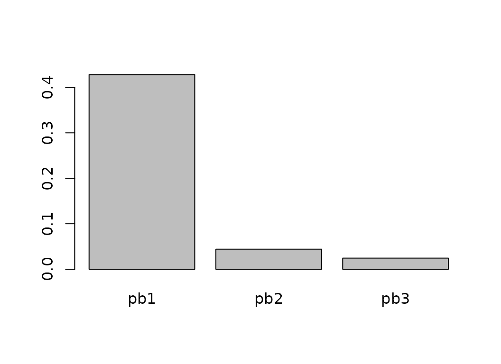

coda.base
vignettes/coordinates.Rmd
coordinates.RmdIn this vignette we show how to define log-ratio coordinates using
coda.base package and its function coordinates
with parameters X, a composition, and basis,
defining the independent log-contrasts for building the coordinates.
In this vignette we work with a subcomposition of the results obtained in different regions of Catalonia in 2017’s parliament elections:
coda.base
The alr coordinates are accessible by setting the parameter
basis='alr' or by using the building function
alr_basis().
If you don’t want the last part in the denominator, the easiest way
to define an alr-coordinates is to set basis='alr':
H1.alr = coordinates(X, basis = 'alr')
head(H1.alr)
#> alr1 alr2 alr3
#> 1 0.23864536 0.446503630 -0.7201917
#> 2 -0.10388120 0.216858085 -1.0473730
#> 3 0.36723896 0.542010167 -0.5320675
#> 4 0.53209369 0.798479995 -0.4799141
#> 5 0.54918649 0.477309280 -0.1028807
#> 6 -0.09742133 0.002856425 -0.6858265It defines an alr-coordinates were the last part is used in the
denominator. We can obtain the basis used to build the coordinates with
function basis():
basis(H1.alr)
#> alr1 alr2 alr3
#> erc 1 0 0
#> jxcat 0 1 0
#> psc 0 0 1
#> cs -1 -1 -1The basis can be reproduced using the function
alr_basis:
alr_basis(dim = 4)
#> alr1 alr2 alr3
#> c1 1 0 0
#> c2 0 1 0
#> c3 0 0 1
#> c4 -1 -1 -1In fact, function alr_basis allows to define any type of
alr-like coordinate by defining the numerator and the denominator:
B.alr = alr_basis(dim = 4, numerator = c(4,2,3), denominator = 1)
B.alr
#> alr1 alr2 alr3
#> c1 -1 -1 -1
#> c2 0 1 0
#> c3 0 0 1
#> c4 1 0 0The log-contrast matrix can be used as basis parameter
in coordinates() function:
H2.alr = coordinates(X, basis = B.alr)
basis(H2.alr)
#> alr1 alr2 alr3
#> c1 -1 -1 -1
#> c2 0 1 0
#> c3 0 0 1
#> c4 1 0 0Building centered log-ratio coordinates can be accomplished by
setting parameter basis='clr' or
H.clr = coordinates(X, basis = 'clr')
head(H.clr)
#> clr1 clr2 clr3 clr4
#> 1 0.24740605 0.4552643 -0.7114311 0.008760689
#> 2 0.12971783 0.4504571 -0.8137740 0.233599031
#> 3 0.27294355 0.4477148 -0.6263629 -0.094295406
#> 4 0.31942879 0.5858151 -0.6925790 -0.212664904
#> 5 0.31828271 0.2464055 -0.3337844 -0.230903777
#> 6 0.09767651 0.1979543 -0.4907286 0.195097842coda.base allows to define a wide variety of
ilr-coordinates: principal components (pc) coordinates, specific user
balances coordinates, principal balances (pb) coordinates, balanced
coordinates (default’s CoDaPack’s coordinates).
The default ilr coordinate used by coda.base are
accessible by simply calling function coordinates without
parameters:
H1.ilr = coordinates(X)
head(H1.ilr)
#> ilr1 ilr2 ilr3
#> 1 -0.14697799 0.8677450 -0.01011597
#> 2 -0.22679692 0.9012991 -0.26973693
#> 3 -0.12358191 0.8056307 0.10888296
#> 4 -0.18836356 0.9350526 0.24556428
#> 5 0.05082486 0.5030669 0.26662472
#> 6 -0.07090708 0.5213690 -0.22527958Parameter basis is set to ilr by
default:
all.equal( coordinates(X, basis = 'ilr'),
H1.ilr )
#> [1] TRUEOther easily accessible coordinates are the Principal Component (PC) coordinates. PC coordinates define the first coordinate as the log-contrast with highest variance, the second the one independent from the first and with highest variance and so on:
H2.ilr = coordinates(X, basis = 'pc')
head(H2.ilr)
#> pc1 pc2 pc3
#> 1 -0.6787536 0.35694598 0.4319368
#> 2 -0.5581520 0.57775877 0.5396259
#> 3 -0.7013616 0.25302877 0.3467523
#> 4 -0.8973701 0.25915667 0.3125234
#> 5 -0.5362270 -0.05527103 0.1901418
#> 6 -0.2676101 0.32802497 0.3852126
barplot(apply(H2.ilr, 2, var))Note that the PC coordinates are independent:
cov(H2.ilr)
#> pc1 pc2 pc3
#> pc1 4.475083e-01 1.036012e-16 1.997487e-16
#> pc2 1.036012e-16 3.650673e-02 -3.031068e-17
#> pc3 1.997487e-16 -3.031068e-17 1.257989e-02The Principal Balance coordinates are similar to PC coordinates but with the restriction that the log contrast are balances
H3.ilr = coordinates(X, basis = 'pb')
head(H3.ilr)
#> pb1 pb2 pb3
#> 1 -0.7026704 -0.14697799 -0.50925247
#> 2 -0.5801749 -0.22679692 -0.74060456
#> 3 -0.7206583 -0.12358191 -0.37622854
#> 4 -0.9052439 -0.18836356 -0.33935049
#> 5 -0.5646882 0.05082486 -0.07274761
#> 6 -0.2956308 -0.07090708 -0.48495254
barplot(apply(H3.ilr, 2, var))
Moreover, they are not independent:
cor(H3.ilr)
#> pb1 pb2 pb3
#> pb1 1.0000000 0.6043786 -0.3197742
#> pb2 0.6043786 1.0000000 0.1594538
#> pb3 -0.3197742 0.1594538 1.0000000Principal Balances are hard to compute when the number of components
is very high. coda.base allows to build PB approximations
using different algorithms.
PB1.ward = pb_basis(X100, method = 'cluster')
PB1.constrained = pb_basis(X100, method = 'constrained')We can compare they performance (variance explained by the first balance) with respect to the principal components.
PC_approx = coordinates(X100, cbind(pc_basis(X100)[,1], PB1.ward[,1], PB1.constrained[,1]))
names(PC_approx) = c('PC', 'Ward', 'Constrained')
apply(PC_approx, 2, var)
#> h1 h2 h3
#> 1.726584 1.367661 1.607451Finally, coda.base allows to define the default CoDaPack
basis which consists in defining well balanced balances, i.e. equal
number of branches in each balance.
H4.ilr = coordinates(X, basis = 'cdp')
head(H4.ilr)
#> ilr1 ilr2 ilr3
#> 1 0.7026704 -0.14697799 -0.50925247
#> 2 0.5801749 -0.22679692 -0.74060456
#> 3 0.7206583 -0.12358191 -0.37622854
#> 4 0.9052439 -0.18836356 -0.33935049
#> 5 0.5646882 0.05082486 -0.07274761
#> 6 0.2956308 -0.07090708 -0.48495254We can define the coordinates directly by providing the log-contrast matrix.
B = matrix(c(-1,-1,2,0,
1,0,-0.5,-0.5,
-0.5,0.5,0,0), ncol = 3)
H1.man = coordinates(X, basis = B)
head(H1.man)
#> h1 h2 h3
#> 1 -2.125532 0.5987412 0.10392914
#> 2 -2.207723 0.4198053 0.16036964
#> 3 -1.973384 0.6332727 0.08738560
#> 4 -2.290402 0.7720507 0.13319315
#> 5 -1.232257 0.6006268 -0.03593861
#> 6 -1.277088 0.2454919 0.05013888We can also define balances using formula
numerator~denominator:
B.man = sbp_basis(list(b1 = erc~jxcat,
b2 = psc~cs,
b3 = erc+jxcat~psc+cs),
data=X)
H2.man = coordinates(X, basis = B.man)
head(H2.man)
#> b1 b2 b3
#> 1 -0.14697799 -0.50925247 0.7026704
#> 2 -0.22679692 -0.74060456 0.5801749
#> 3 -0.12358191 -0.37622854 0.7206583
#> 4 -0.18836356 -0.33935049 0.9052439
#> 5 0.05082486 -0.07274761 0.5646882
#> 6 -0.07090708 -0.48495254 0.2956308With sbp_basis we do not need to define neither a basis
nor a system generator
B = sbp_basis(list(b1 = erc+jxcat~psc+cs),
data=X)
#> Warning in sbp_basis(list(b1 = erc + jxcat ~ psc + cs), data = X): Given
#> partition is not a basis
H3.man = coordinates(X, basis = B)
head(H3.man)
#> b1
#> 1 0.7026704
#> 2 0.5801749
#> 3 0.7206583
#> 4 0.9052439
#> 5 0.5646882
#> 6 0.2956308or
B = sbp_basis(list(b1 = erc~jxcat+psc~cs,
b2 = jxcat~erc+psc+cs,
b3 = psc~erc+jxcat+cs,
b4 = cs~erc+jxcat+psc),
data=X)
#> Warning in sbp_basis(list(b1 = erc ~ jxcat + psc ~ cs, b2 = jxcat ~ erc + :
#> Given basis is not orthogonal
H4.man = coordinates(X, basis = B)
head(H4.man)
#> b1 b2 b3 b4
#> 1 -0.01011597 0.5256940 -0.8214898 0.01011597
#> 2 -0.26973693 0.5201431 -0.9396653 0.26973693
#> 3 0.10888296 0.5169765 -0.7232616 -0.10888296
#> 4 0.24556428 0.6764410 -0.7997213 -0.24556428
#> 5 0.26662472 0.2845246 -0.3854211 -0.26662472
#> 6 -0.22527958 0.2285779 -0.5666446 0.22527958If interested, we can complete a sequential binary partition giving only some partitions
B = sbp_basis(list(b1 = erc+jxcat~psc),
data=X, fill = TRUE)
sign(B)
#> [,1] [,2] [,3]
#> V1 1 1 1
#> V2 1 1 -1
#> V3 -1 1 0
#> V4 0 -1 0We can also define sequential binary partition using a matrix. By using a matrix we don’t need to include a dataset. The number of components is obtained with the number of rows and component names from row names (if available).
P = matrix(c(1, 1,-1,-1,
1,-1, 0, 0,
0, 0, 1,-1), ncol= 3)
B = sbp_basis(P)
H5.man = coordinates(X, basis = B)
head(H5.man)
#> h1 h2 h3
#> 1 0.7026704 -0.14697799 -0.50925247
#> 2 0.5801749 -0.22679692 -0.74060456
#> 3 0.7206583 -0.12358191 -0.37622854
#> 4 0.9052439 -0.18836356 -0.33935049
#> 5 0.5646882 0.05082486 -0.07274761
#> 6 0.2956308 -0.07090708 -0.48495254